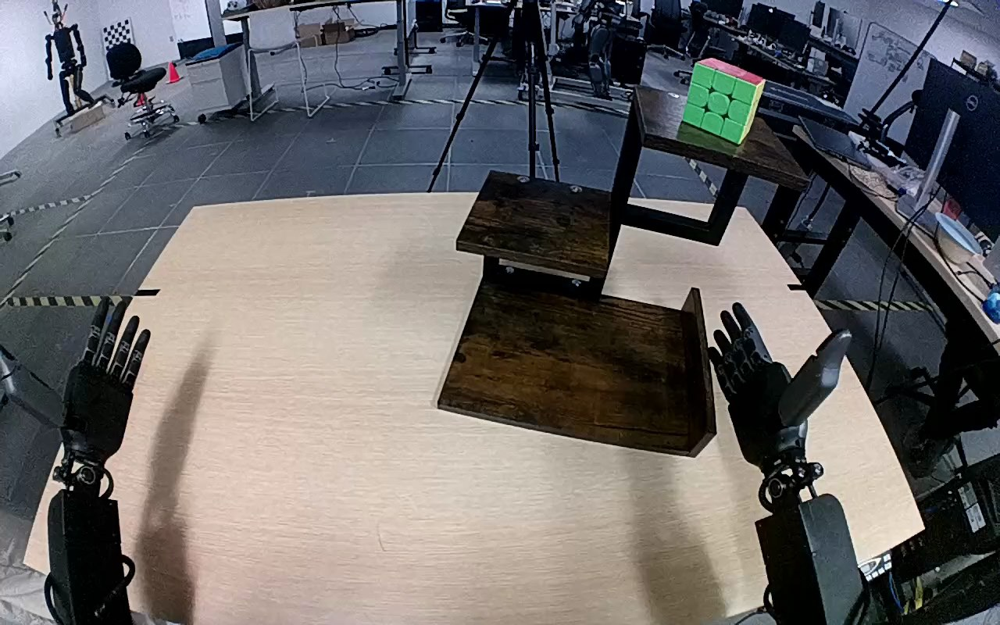

NVIDIA GR1 · 21
Video 21

Visual review action_review.json
{
"prompt_protocol": "humanoid_action_v1",
"prompt_provenance": "visually_authored_from_video_and_initial_frame",
"reviewed_contact_sheets": [
"sheet_001.jpg"
],
"inspected_frame_stride": 2,
"inspected_sampled_frame_count": 60,
"initial_scene": "Two robot forearms extend from the lower foreground toward the tabletop; both hands are open. A multicolored 3-by-3 Rubik's cube with green front and red top rests on the highest tier of a three-level wooden shelf. The lower tray-like shelf is empty.",
"observed_sequence": [
{
"source_frame_interval": [
0,
16
],
"action": "Both hands begin open below the shelf; the cube remains upright on the top level.",
"confidence": "high"
},
{
"source_frame_interval": [
17,
42
],
"action": "The right arm raises its open hand to the cube on the top shelf. The left hand stays below and does not interact.",
"confidence": "high"
},
{
"source_frame_interval": [
43,
64
],
"action": "The right hand closes around opposing sides of the cube while it is still at the top shelf, establishing a grasp.",
"confidence": "high"
},
{
"source_frame_interval": [
65,
80
],
"action": "The right arm draws the gripped cube clear of the top shelf toward the right and starts moving it downward.",
"confidence": "high"
},
{
"source_frame_interval": [
81,
106
],
"action": "The right arm carries the cube down beside the shelf and inward over the bottom tray, lowering it onto the bottom level.",
"confidence": "high"
},
{
"source_frame_interval": [
107,
114
],
"action": "The right hand remains around the cube near the bottom surface during a small settling adjustment.",
"confidence": "high"
},
{
"source_frame_interval": [
115,
119
],
"action": "The right fingers open away from the cube, leaving it upright on the bottom shelf. The open right hand remains immediately beside it.",
"confidence": "high"
}
],
"arm_hand_roles": {
"right": "Active throughout: reaches to the top shelf, grasps and lifts the cube, carries it down, lowers it onto the bottom level, and opens to release it.",
"left": "Open and idle beside the table; does not contact the cube or stabilize the shelf.",
"coordination": "Single-hand transport and release; no hand-to-hand transfer or simultaneous support."
},
"anatomical_side_evidence": {
"description": "The view looks forward over the robot forearms: both arms enter from the lower foreground and extend toward the tabletop. The active arm is continuously traceable to the robot-right foreground branch, with its thumb/finger geometry visible in the initial PNG and raised-hand details. The opposite open hand belongs to the robot-left branch. This robot-forward arm orientation establishes the side convention rather than using an image-side label alone; the source right-hand instruction agrees.",
"confidence": "high",
"limitations": "Shoulders and torso are outside the camera view; inference uses forearm orientation, hand geometry, and uninterrupted arm continuity."
},
"terminal_state": "The cube stands upright on the bottom shelf, clear of the opened right fingers. The right hand remains beside the cube and the left hand remains idle. The top shelf is empty.",
"selected_execution_status": "success",
"uncertainties": [
"Exact first surface-contact frame is partially obscured by the right hand; the released final cube is visibly supported by the bottom shelf."
],
"annotation_discrepancies": [],
"evidence_frame_indices": [
0,
30,
42,
50,
64,
76,
88,
104,
116,
119
],
"inspection_coverage": {
"sampled_frames": "Every second decoded frame from 0 through 118, complete source sequence.",
"native_resolution_frames": [
30,
42,
50,
64,
76,
88,
104,
116,
119
],
"source_initial_png_viewed": true,
"native_dimensions": [
1280,
800
]
},
"video_id": "21",
"dataset": "NVIDIA_GR1_100",
"dedicated_review_agent": "review_gr1_21",
"review_source_video": "NVIDIA_GR1_100/21/original/original.mp4",
"source_frame_count": 120,
"source_fps": 20.0,
"native_detail_frames": [
30,
42,
50,
64,
76,
88,
104,
116,
119
],
"world_model_prompt": "The robot uses its right hand to grasp the Rubik's cube on the top level of the wooden shelf, lift it clear, and carry it down to the bottom level. It lowers the cube onto the bottom shelf and opens its fingers, leaving the cube upright with the right hand still beside it. Keep the camera fixed; preserve robot geometry, physically valid joint motion, and normal gripper opening and closing.",
"original_task_instruction": "Use the right hand to pick up rubik's cube from top level of brown wooden shelf to bottom level of brown wooden shelf.",
"selected_segment": {
"start_frame": 0,
"end_frame_exclusive": 120,
"reason": "Complete original single-task reference; no cropping or trimming requested."
},
"source_video_sha256": "10dbccc79272acfc3f1d89e42c97c78f2b2075970d599db7adae753b6dff3049",
"review_completed_at": "2026-10-13T17:48:37.569367+00:00"
}